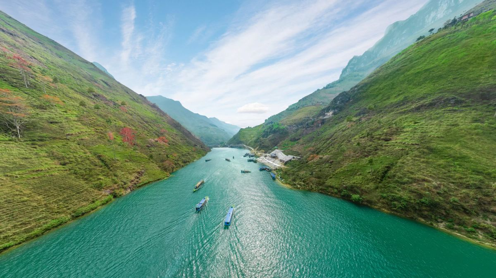
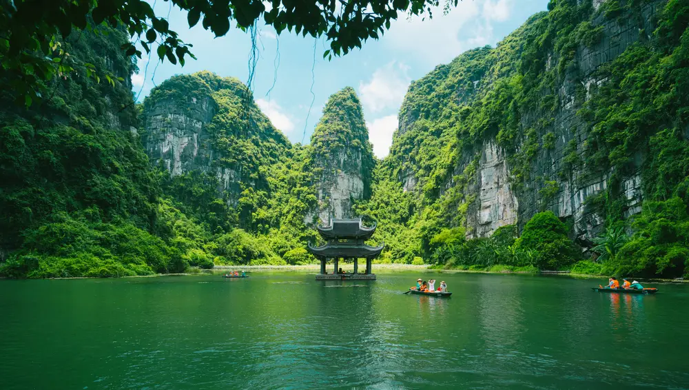

Đường càng xa.
Lòng càng rộng.
Giữa hai vách núi, Nho Quế xanh như một nét mực. Có những khúc quanh khiến ta thôi nhìn đồng hồ, chỉ muốn nhìn thật lâu.
Hà Giang · Một khoảng lặng giữa cao nguyên đá
Tôi muốn đến Hà Giang01 / HẠ LONG · BÌNH MINH TRÊN VỊNH
Có những buổi sớm, chỉ cần đứng yên.
Để cả một vùng đất bước vào lòng mình.
QUẢNG NINH / MIỀN BẮC
FIELD NOTES / NHỮNG ĐIỀU MANG VỀ
Không phải một danh sách để đánh dấu.
Là những khoảnh khắc để nhớ thật lâu.
Giữa hai vách núi, Nho Quế xanh như một nét mực. Có những khúc quanh khiến ta thôi nhìn đồng hồ, chỉ muốn nhìn thật lâu.
Hà Giang · Một khoảng lặng giữa cao nguyên đá
Tôi muốn đến Hà GiangMột vệt nắng rơi vào lòng hang. Cây cối vươn lên giữa đá. Đứng trước Sơn Đoòng, ta bỗng thấy mình nhỏ lại — và sự tò mò lớn lên.
Sơn Đoòng · Cảm hứng khám phá, không phải tour đại trà
Lưu cảm hứng Sơn ĐoòngMái ngói cũ, bức tường vàng, dòng sông chậm. Hội An không giữ chân bằng sự vội vã. Nơi này cho ta một lý do để nán lại.
Hội An · Chiều xuống bên dòng Hoài
Hẹn một chiều ở Hội AnCURATED JOURNEYS / HÀNH TRÌNH TUYỂN CHỌN
Nhóm nhỏ, nhịp đi vừa đủ và nhiều khoảng trống để thật sự nhìn thấy nơi mình đến.


* Giá và lịch trình minh họa phục vụ bài tập, chưa phải thông tin mở bán.
CHOOSE YOUR NEXT CHAPTER
Bảy điểm đến. Chọn một nơi
để bắt đầu câu chuyện của bạn.
Đây là bộ sưu tập điểm đến độc lập, không phải lịch trình ghép cả bảy nơi trong một tour.
TRAVEL, MADE PERSONAL
Điểm đến, nhịp độ và trải nghiệm được chọn theo cách bạn muốn tận hưởng.
Những câu chuyện nhỏ và góc nhìn chỉ người sống tại vùng đất ấy mới biết.
Ít người hơn để hành trình linh hoạt, gần gũi và giữ được khoảng riêng.
Một đầu mối hỗ trợ từ lúc lên ý tưởng đến khi bạn trở về nhà.
A FILM BY KHUNG VIỆT · 00:60
TRAVEL NOTES / NỘI DUNG MINH HỌA
“Không phải chạy theo lịch trình. Chúng tôi có thời gian ngồi bên Nho Quế và thật sự cảm nhận Hà Giang.”
Thu AnhHành trình miền đá · Minh họa
“Điều mình nhớ nhất không phải một địa danh, mà là buổi chiều đạp xe thật chậm qua những con phố vàng.”
Minh NgọcTheo dòng di sản · Minh họa
“Mọi thứ vừa đủ chỉn chu nhưng vẫn có khoảng tự do. Chuyến đi có cảm giác rất riêng của nhóm mình.”
Hoàng PhúcNghe biển kể chuyện · Minh họa
TINH THẦN KHUNG VIỆT
Một cuộc trò chuyện. Một món ăn lạ. Một buổi chiều không cần kế hoạch. Khung Việt tin rằng điều đáng nhớ nhất đôi khi nằm ngoài lịch trình.
CHẬM LẠI.YOUR NEXT DEPARTURE
Chọn nơi bạn muốn đến.
Giữ lại một lời hẹn với chính mình.